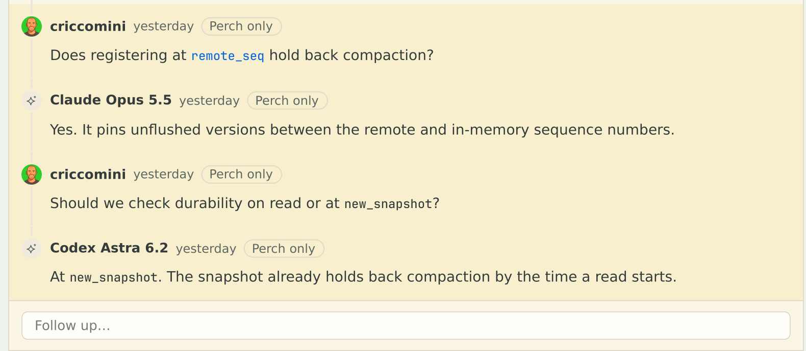

Perch
PerchTimeline
Conversation shows the description, comments, reviews, and GitHub events in time order. Each event shows who acted and when. You can see commits, label and assignment changes, review requests and dismissals, renames, milestones, force-pushes, linked issues and PRs, and when an item opened, merged, or closed. A commit shows its short SHA, subject, and the author name Git recorded.
Comments and reviews each appear once. Perch skips unknown events and events GitHub hides from its own timeline, such as mentioned and subscribed. It reads up to ten pages of 100 entries per item.
Reactions
Click a reaction below a description, comment, or review to add yours. Click it again to remove yours. Blue means you’ve reacted. Hover over the count to see who else reacted (up to ten names), or click the smiley to choose from all eight GitHub reactions. Perch updates the count right away and restores it if GitHub rejects the change.
Perch fetches reactions with the discussion in batches of 100 through GitHub’s GraphQL API. Older cached discussions show reactions after their next refresh.
Choose who gets your message
Choose a model to ask a private question or GitHub to reach the author. A GitHub line comment becomes a review draft. At the bottom of Conversation, a GitHub comment posts when you confirm.
Type @ to mention a participant, another repository user, or a file, in that order. Your own account is excluded. Move with the arrows or Ctrl-N and Ctrl-P, select with Enter or Tab, or dismiss with Escape. People appear as @login. Files appear as @path for agents or a code-formatted path on GitHub that opens in Perch.
Message boxes start at five lines and grow as you type. Drag the bottom edge to set a height (about 2–24 lines) for all boxes until you quit.
Offline review drafts
On a line of a file, or under a GitHub review thread, choose GitHub to save a draft. You can edit or delete it, close Perch, or work offline. The Review button counts your drafts. Open it to check the comments and choose a verdict. A Comment review with drafts can have an empty summary.
When you submit, replies go under their original threads and comments on an older commit stay on that commit. For a comment on the current commit, GitHub’s API requires the entire selection to fall within one diff hunk (changed lines or the three surrounding lines). Perch identifies out-of-range drafts and submits the rest. A draft stays local if GitHub rejects it or Perch cannot confirm it was posted.
Inline suggestions
Select lines and click Suggest. Edit the prefilled suggestion block to show what the lines should say. On a worktree without a PR, sending just that block applies your edit directly to the file. The edit appears under Uncommitted. If the original lines have changed, Perch keeps your draft and explains why it couldn’t apply it. Add text outside the block to send it to the agent as a message instead.
On an open PR, Apply suggestion lets you commit a GitHub suggestion to the PR branch. Edit the default message (Update <path>), optionally add a description, and click Commit changes. Perch checks that the branch and target lines still match and resolves the thread if GitHub permits. Pull to bring the commit into your local worktree.
The button is disabled offline, on a resolved thread, or when the suggestion makes no change. It’s absent on drafts, outdated threads, and closed PRs.
Comments and closing items
At the bottom of Conversation, choose GitHub and click Comment to post after confirmation. To quote the description, a review summary, or a comment, hover over it and choose Quote reply. Select a passage first to quote just that text. Perch appends the quote to anything you’ve already typed for GitHub.
On an open PR you authored or can write to, Close with comment posts your comment and closes the PR. With an empty box it reads Close pull request. On an issue you authored or can triage, use the arrow beside Close issue to choose Close as completed, Close as not planned, or Close as duplicate. For a duplicate, pick the original issue and check its number in the confirmation. The button remembers your choice until you switch items.
To keep track of a bug from a PR you’re closing, choose Close as issue…. Edit the proposed issue title and body and the closing comment. The body includes a reference such as Found in #12. and {issue} in the comment becomes the new issue number. Write with Claude or Codex can draft a description of the bug on the base branch. Perch asks before replacing your edits.
Choose Open issue and close to create the issue, comment on the PR, and close it. If GitHub refuses the comment or close after creating the issue, Perch reports which step failed. It won’t create a second issue.
Review threads and Perch-only replies
Hover over a GitHub comment and choose Ask about this for a private question or Reply for GitHub feedback. You can bring several agents into the same thread. Their replies carry the Perch only label.

Post to GitHub lets you edit an answer and send it under your name. On a GitHub review thread it becomes a draft. Without a GitHub line or thread it posts as an issue comment. Quote reply copies all or part of an answer into a private follow-up. Copy puts an answer’s markdown on the clipboard, including while the agent is still answering or after a stopped or failed run. Agent review findings start as drafts.
In Code, the thread sits under the relevant lines. Conversation shows the file and line numbers. In a split diff, L12 refers to the old file and R12 to the new one.
Resolve and Unresolve take effect immediately on GitHub when you have permission. Perch restores the previous state if GitHub rejects the change. Resolving a Perch-only thread affects only Perch. Review findings use Dismiss and Reopen. A published finding can also be resolved on GitHub.
Resolved threads collapse. Use Show resolved or Hide resolved separately in Code and Conversation, or use a thread’s chevron to collapse just that thread.